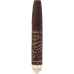
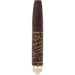

商品の特徴
●液量が変わる！３段階ダイヤル。
●少量もたっぷりも、ボリューム自在。美ボリュームダイヤルマスカラです。
●ダイヤル回して、付きすぎないナチュラル、目ヂカラＵＰくっきり、素早く超濃密の３つの仕上がりが選べます。
●一日中カールロック。瞬間ロック成分配合。
●汗、水、皮脂でにじまない耐久処方。
●ぬるま湯で簡単ＯＦＦ。
●まつ毛美容液成分配合。
- 成分・分量
- 【成分】
水、ポリウレタン－３５、コメヌカロウ、カルナウバロウ、ステアリン酸、ＰＧ、エトキシジグリコール、ナイロン－６６、ＴＥＡ、カオリン、アルガニアスピノサ核油、カニナバラ果実油、ツバキ種子油、ローヤルゼリーエキス、ＰＶＰ、セテアリルアルコール、トリステアリン酸スクロース、イソステアリン酸ＰＥＧ－２０ソルビタン、メチルプロパンジオール、ヒドロキシプロピルメチルセルロース、フェノキシエタノール、アラビアゴム、メチルパラベン、カプリリルグリコール、ナイロン－６、プロピルパラベン、シリカ、フェニルプロパノール、スクワラン、酸化鉄、酸化チタン
- 用法及び用量
- 【使用方法】
●ダイヤルを回して、お好みのボリュームに合わせます。
●ビューラーで先にまつ毛をアップさせてからご使用ください。
●ブラシへのつきが少なくなった場合は、容器の壁面についている液をブラシで軽くかき混ぜてからお使いください。
●落とすときは４０度くらいのお湯でしばらくなじませ、まつ毛を軽く指でつまむように洗うと簡単に落とせます。
 
